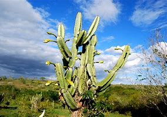

Clima: A Caatinga possui um clima quente e seco, com temperaturas elevadas e chuvas escassas e irregulares.
Solo: O solo é geralmente raso, pedregoso e pobre em nutrientes, o que limita a vegetação e a agricultura.
A Caatinga é um bioma exclusivamente brasileiro, caracterizado por um clima semiárido e por uma vegetação adaptada à seca. O nome "Caatinga" significa "mata branca" em Tupi, devido à aparência das plantas durante o período de seca, quando muitas delas perdem suas folhas. Esse bioma cobre cerca de 10% do território brasileiro, sendo encontrado principalmente na região Nordeste do Brasil, mas também se estendendo para algumas áreas do Norte e Centro-Oeste.
.png)
.png)
Clima: A Caatinga possui um clima quente e seco, com temperaturas elevadas e chuvas escassas e irregulares.
Solo: O solo é geralmente raso, pedregoso e pobre em nutrientes, o que limita a vegetação e a agricultura.
A Caatinga é um bioma brasileiro, localizado na região Nordeste do Brasil, abrangendo áreas dos estados de:
A fauna da Caatinga inclui muitos animais adaptados ao clima árido, como o tatu-bola, a arara-azul-de-lear, e a onça-parda. Além disso, o bioma abriga uma grande diversidade de répteis e aves, como o teiú e o sabiá-da-mata.
Suçuarana
.png)
Tatu
.png)
Arara-Azul-de-Lear
.png)
Águia-chilena
.png)
Cachorro-do-mato
.png)
Calango-de-cauda-verde
Gambá-de-orelha-branca
.png)
Capivara
A vegetação da Caatinga é predominantemente adaptada ao clima seco e apresenta diversas características que garantem a sobrevivência em condições de escassez de água.
Carnaúba
Mandacaru
Xique-Xique
Facheiro
As interações da Caatinga envolvem a adaptação de plantas e animais às duras condições de seca, com muitas espécies capazes de armazenar água ou reduzir suas atividades metabólicas.
.png)
.png)
O desmatamento da Caatinga é causado principalmente pela expansão agrícola, exploração de madeira para carvão e lenha, e práticas insustentáveis que contribuem para a desertificação.
.png)
.png)
Mudanças climáticas e impactos na biodiversidade: As atividades humanas, como a emissão de gases de efeito estufa, agravam os efeitos da mudança climática, tornando o semiárido ainda mais vulnerável.
A exploração intensiva da água, especialmente para a agricultura irrigada, causa a escassez de água nas regiões da Caatinga. A retirada excessiva pode afetar a dinâmica dos lençóis freáticos e a vegetação, além de prejudicar a fauna adaptada ao clima semiárido.
As queimadas são um fator importante do impacto humano na Caatinga, usadas para agricultura e pastagem. Elas causam perda de biodiversidade, degradação do solo, emissão de gases de efeito estufa e pioram a qualidade de vida local.
.png)
.png)
.png)